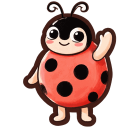

Fragen, Probleme oder Ideen? Schreib uns an info@tomscheduikat.com. Wir melden uns so schnell wie möglich.
Tippe im Menü auf das Zahnrad oben rechts und löse die kleine Rechenaufgabe. Dort findest du Profile, Sprache, Töne, Musik, die Freischaltung und den Datenschutz.
Fünf Welten, alle Brettgrößen und die Spielsteine Marienkäfer, Muschel und Keks sind kostenlos; Muschel und Keks werden beim Spielen freigespielt. Ein einmaliger Kauf (0,99 €) schaltet Dinosaurier, Weltraum, Haustiere, Insekten, Süßigkeiten, die Spielsteine Blatt und Schatzkiste sowie alle neuen Welten und Spielsteine aus kommenden Updates frei. Kein Abo, keine Werbung.
Öffne den Elternbereich und tippe auf „Käufe wiederherstellen“. Nutze dasselbe Apple- oder Google-Konto wie beim Kauf. Auf iPhone und iPad gilt der Kauf über die Familienfreigabe auch für deine Familie.
Im Elternbereich unter „Töne“ und „Musik“. Die Töne spielen auch, wenn das Gerät auf lautlos steht; deshalb gibt es dort einen eigenen Schalter.
Elternbereich → „Profile verwalten“. Mit dem Profil werden auch sein Album und sein Fortschritt gelöscht.
Keine persönlichen Daten. Details stehen in der Datenschutzerklärung.
Questions, problems or ideas? Write to info@tomscheduikat.com. We get back to you as soon as we can.
Tap the gear at the top right of the menu and solve the small sum. There you find profiles, language, sound, music, the unlock and the privacy policy.
Five worlds, all board sizes and the ladybug, shell and cookie tokens are free; the shell and the cookie are earned by playing. A one-time purchase (€0.99) unlocks dinosaurs, space, pets, insects, sweets, the leaf and treasure chest tokens and every new world and token in future updates. No subscription, no ads.
Open the parent area and tap "Restore purchases". Use the same Apple or Google account as for the purchase. On iPhone and iPad, Family Sharing makes the purchase available to your family.
In the parent area under "Sound" and "Music". Sounds also play when the device is on silent, which is why there is a separate switch.
Parent area → "Manage profiles". Deleting a profile also deletes its album and progress.
No personal data. Details are in the privacy policy.
¿Preguntas, problemas o ideas? Escríbenos a info@tomscheduikat.com. Te responderemos lo antes posible.
Toca el engranaje arriba a la derecha del menú y resuelve la pequeña suma. Allí están los perfiles, el idioma, el sonido, la música, el desbloqueo y la privacidad.
Cinco mundos, todos los tamaños de tablero y las fichas de mariquita, concha y galleta son gratis; la concha y la galleta se ganan jugando. Una compra única (0,99 €) desbloquea dinosaurios, espacio, mascotas, insectos, dulces, las fichas de hoja y cofre del tesoro y todos los mundos y fichas nuevos de futuras actualizaciones. Sin suscripción ni anuncios.
Abre la zona de padres y toca «Restaurar compras». Usa la misma cuenta de Apple o Google que en la compra. En iPhone y iPad, En familia comparte la compra con tu familia.
En la zona de padres, en «Sonido» y «Música». Los sonidos suenan aunque el dispositivo esté en silencio; por eso hay un interruptor propio.
Zona de padres → «Gestionar perfiles». Al eliminar un perfil se borran también su álbum y su progreso.
Ningún dato personal. Los detalles están en la política de privacidad.
Des questions, des problèmes ou des idées ? Écris-nous à info@tomscheduikat.com. Nous te répondons dès que possible.
Touche la roue crantée en haut à droite du menu et résous le petit calcul. Tu y trouves les profils, la langue, les sons, la musique, le déblocage et la confidentialité.
Cinq mondes, toutes les tailles de plateau et les jetons coccinelle, coquillage et biscuit sont gratuits ; le coquillage et le biscuit se gagnent en jouant. Un achat unique (0,99 €) débloque les dinosaures, l’espace, les animaux de compagnie, les insectes, les friandises, les jetons feuille et coffre au trésor, ainsi que tous les nouveaux mondes et jetons des futures mises à jour. Sans abonnement, sans publicité.
Ouvre l’espace parents et touche « Restaurer les achats ». Utilise le même compte Apple ou Google que pour l’achat. Sur iPhone et iPad, le Partage familial rend l’achat disponible pour toute ta famille.
Dans l’espace parents, sous « Sons » et « Musique ». Les sons se font aussi entendre quand l’appareil est en mode silencieux ; c’est pourquoi il y a un réglage à part.
Espace parents → « Gérer les profils ». Supprimer un profil supprime aussi son album et sa progression.
Aucune donnée personnelle. Les détails figurent dans la politique de confidentialité.
Domande, problemi o idee? Scrivici a info@tomscheduikat.com. Ti rispondiamo il prima possibile.
Tocca l’ingranaggio in alto a destra nel menu e risolvi il piccolo calcolo. Lì trovi i profili, la lingua, i suoni, la musica, lo sblocco e la privacy.
Cinque mondi, tutte le dimensioni del tabellone e le pedine coccinella, conchiglia e biscotto sono gratis; la conchiglia e il biscotto si ottengono giocando. Un acquisto una tantum (0,99 €) sblocca dinosauri, spazio, animali domestici, insetti, dolciumi, le pedine foglia e scrigno del tesoro e tutti i nuovi mondi e le nuove pedine dei prossimi aggiornamenti. Nessun abbonamento, nessuna pubblicità.
Apri l’area genitori e tocca «Ripristina acquisti». Usa lo stesso account Apple o Google dell’acquisto. Su iPhone e iPad, In famiglia rende l’acquisto disponibile anche alla tua famiglia.
Nell’area genitori, in «Suoni» e «Musica». I suoni si sentono anche quando il dispositivo è in silenzioso; per questo c’è un interruttore a parte.
Area genitori → «Gestisci i profili». Eliminando un profilo si cancellano anche il suo album e i suoi progressi.
Nessun dato personale. I dettagli sono nell’informativa sulla privacy.
Dúvidas, problemas ou ideias? Escreva para info@tomscheduikat.com. Respondemos o mais rápido possível.
Toque na engrenagem no canto superior direito do menu e resolva a continha. Lá ficam os perfis, o idioma, os sons, a música, o desbloqueio e a privacidade.
Cinco mundos, todos os tamanhos de tabuleiro e as peças joaninha, concha e biscoito são grátis; a concha e o biscoito são conquistados jogando. Uma compra única (0,99 €) desbloqueia dinossauros, espaço, animais de estimação, insetos, doces, as peças folha e baú do tesouro e todos os mundos e peças novos das próximas atualizações. Sem assinatura, sem anúncios.
Abra a área dos pais e toque em “Restaurar compras”. Use a mesma conta Apple ou Google da compra. No iPhone e no iPad, o Compartilhamento Familiar disponibiliza a compra para a sua família.
Na área dos pais, em “Sons” e “Música”. Os sons tocam mesmo quando o aparelho está no silencioso; por isso há um botão separado.
Área dos pais → “Gerenciar perfis”. Ao apagar um perfil, o álbum e o progresso dele também são apagados.
Nenhum dado pessoal. Os detalhes estão na política de privacidade.
Vragen, problemen of ideeën? Mail ons op info@tomscheduikat.com. We reageren zo snel mogelijk.
Tik in het menu rechtsboven op het tandwiel en los de kleine som op. Daar vind je profielen, taal, geluid, muziek, de ontgrendeling en de privacy.
Vijf werelden, alle bordgroottes en de speelstenen lieveheersbeestje, schelp en koekje zijn gratis; de schelp en het koekje verdien je door te spelen. Eén eenmalige aankoop (€ 0,99) ontgrendelt dinosaurussen, ruimte, huisdieren, insecten, snoep, de speelstenen blad en schatkist en alle nieuwe werelden en speelstenen uit toekomstige updates. Geen abonnement, geen reclame.
Open het gedeelte voor ouders en tik op “Herstel aankopen”. Gebruik hetzelfde Apple- of Google-account als bij de aankoop. Op iPhone en iPad stelt Delen met gezin de aankoop ook beschikbaar voor je gezin.
In het gedeelte voor ouders onder “Geluid” en “Muziek”. Geluiden klinken ook als het apparaat op stil staat; daarom is er een aparte schakelaar.
Gedeelte voor ouders → “Profielen beheren”. Als je een profiel verwijdert, verdwijnen ook het album en de voortgang.
Geen persoonlijke gegevens. Details staan in de privacyverklaring.
Frågor, problem eller idéer? Skriv till info@tomscheduikat.com. Vi svarar så snart vi kan.
Tryck på kugghjulet uppe till höger i menyn och lös det lilla räknestycket. Där finns profiler, språk, ljud, musik, upplåsningen och integritet.
Fem världar, alla brädstorlekar och spelbrickorna nyckelpiga, snäcka och kaka är gratis; snäckan och kakan får man genom att spela. Ett engångsköp (0,99 €) låser upp dinosaurier, rymden, husdjur, insekter, godis, spelbrickorna blad och skattkista samt alla nya världar och spelbrickor i kommande uppdateringar. Ingen prenumeration, ingen reklam.
Öppna föräldraområdet och tryck på “Återställ köp”. Använd samma Apple- eller Google-konto som vid köpet. På iPhone och iPad gör Familjedelning köpet tillgängligt för din familj.
I föräldraområdet under “Ljud” och “Musik”. Ljuden hörs även när enheten är på ljudlöst; därför finns det en egen knapp.
Föräldraområdet → “Hantera profiler”. När en profil tas bort raderas även dess album och framsteg.
Inga personuppgifter. Detaljer finns i integritetspolicyn.
Spørgsmål, problemer eller idéer? Skriv til info@tomscheduikat.com. Vi svarer så hurtigt vi kan.
Tryk på tandhjulet øverst til højre i menuen og løs det lille regnestykke. Dér finder du profiler, sprog, lyd, musik, oplåsningen og privatlivspolitikken.
Fem verdener, alle brætstørrelser og brikkerne mariehøne, muslingeskal og småkage er gratis; muslingeskallen og småkagen optjener man ved at spille. Et enkelt køb (0,99 €) låser op for dinosaurer, rummet, kæledyr, insekter, slik, brikkerne blad og skattekiste og alle nye verdener og brikker i kommende opdateringer. Intet abonnement, ingen reklamer.
Åbn forældreområdet, og tryk på “Gendan køb”. Brug den samme Apple- eller Google-konto som ved købet. På iPhone og iPad gør Familiedeling købet tilgængeligt for din familie.
I forældreområdet under “Lyd” og “Musik”. Lydene spiller også, når enheden er på lydløs; derfor er der en separat kontakt.
Forældreområdet → “Administrer profiler”. Når en profil slettes, slettes dens album og fremgang også.
Ingen personlige data. Detaljer findes i privatlivspolitikken.
Spørsmål, problemer eller ideer? Skriv til info@tomscheduikat.com. Vi svarer så fort vi kan.
Trykk på tannhjulet øverst til høyre i menyen og løs den lille regneoppgaven. Der finner du profiler, språk, lyd, musikk, opplåsingen og personvern.
Fem verdener, alle brettstørrelser og brikkene marihøne, skjell og kjeks er gratis; skjellet og kjeksen tjener man ved å spille. Et engangskjøp (0,99 €) låser opp dinosaurer, verdensrommet, kjæledyr, insekter, godteri, brikkene blad og skattekiste og alle nye verdener og brikker i kommende oppdateringer. Ikke noe abonnement, ingen reklame.
Åpne foreldreområdet og trykk på «Gjenopprett kjøp». Bruk den samme Apple- eller Google-kontoen som ved kjøpet. På iPhone og iPad gjør Familiedeling kjøpet tilgjengelig for familien din.
I foreldreområdet under «Lyd» og «Musikk». Lydene spilles også når enheten står på lydløs; derfor finnes det en egen bryter.
Foreldreområdet → «Administrer profiler». Når en profil slettes, slettes også albumet og fremgangen.
Ingen personopplysninger. Detaljer finnes i personvernerklæringen.
ご質問、不具合、アイデアなど、お気軽に info@tomscheduikat.com までご連絡ください。できるだけ早くお返事します。
メニューの右上にある歯車をタップして、かんたんな計算問題を解いてください。プロフィール、言語、効果音、音楽、すべてアンロック、プライバシーはそこにあります。
5つのワールド、すべてのボードサイズ、てんとう虫・貝がら・クッキーのコマは無料です。貝がらとクッキーは、遊ぶともらえます。1回かぎりの購入（€0.99）で、きょうりゅう、宇宙、ペット、昆虫、おかし、葉っぱと宝箱のコマに加え、今後のアップデートで追加される新しいワールドとコマもすべて使えるようになります。サブスクリプションも広告もありません。
保護者エリアを開き、「購入を復元」をタップしてください。購入時と同じ Apple または Google アカウントをお使いください。iPhone と iPad では、ファミリー共有で、ご家族も購入内容を使えます。
保護者エリアの「効果音」と「音楽」で切り替えられます。効果音は端末がサイレントのときも鳴るため、専用のスイッチがあります。
保護者エリア →「プロフィールを管理」から削除できます。プロフィールを削除すると、そのアルバムと進み具合も消えます。
個人情報は一切集めません。くわしくはプライバシーポリシーをご覧ください。
궁금한 점, 문제, 아이디어가 있나요? info@tomscheduikat.com로 보내 주세요. 최대한 빨리 답해 드릴게요.
메뉴 오른쪽 위의 톱니바퀴를 누르고 간단한 계산 문제를 풀어 주세요. 프로필, 언어, 소리, 음악, 잠금 해제, 개인정보 보호가 모두 그곳에 있어요.
월드 5개, 모든 판 크기, 무당벌레·조개껍데기·쿠키 말은 무료예요. 조개껍데기와 쿠키는 게임을 하면서 얻어요. 한 번만 결제하면(€0.99) 공룡, 우주, 반려동물, 곤충, 과자, 나뭇잎과 보물상자 말은 물론, 앞으로 업데이트로 추가되는 새 월드와 말까지 모두 열려요. 구독도 광고도 없어요.
보호자 영역을 열고 「구입 항목 복원」을 눌러 주세요. 구입할 때 쓴 Apple 또는 Google 계정을 사용해야 해요. iPhone과 iPad에서는 가족 공유로 가족도 구입 항목을 쓸 수 있어요.
보호자 영역의 「소리」와 「음악」에서 끌 수 있어요. 소리는 기기가 무음일 때도 나오기 때문에 따로 스위치가 있어요.
보호자 영역 → 「프로필 관리」에서 삭제해요. 프로필을 삭제하면 그 앨범과 진행 상황도 함께 삭제돼요.
개인정보는 수집하지 않아요. 자세한 내용은 개인정보 처리방침을 확인해 주세요.